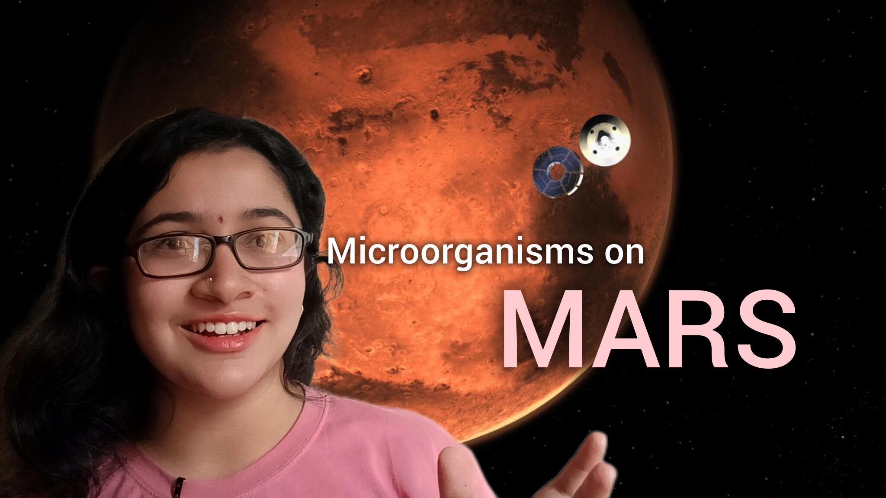

Welcome to my corner of the universe.
I'm Stuti, an Astrophysics Researcher exploring globular clusters, stellar evolution, galaxies, planetary science, and the countless questions the night sky continues to ask.
Shattarika is a personal astronomy archive where I document research projects, educational resources, notes, observations, and my ongoing journey through the cosmos.
My goal is simple: to build astronomy resources that make the universe a little more accessible, understandable, and inspiring for students and enthusiasts alike.
Current Focus
🎥 Astronomy Content Creation
🔭 Observational Astronomy Research
📚 Building Astronomy Resources for Students
🌌 Developing Shattarika into a long-term astronomy knowledge platform
Currently Exploring
🪐 Bright Angel Formation on Mars
🧬 Potential Biosignatures
🌠 Globular Clusters
🌌 Galaxy Morphology
📚 Building Educational Astronomy Resources
Recent Research
Estimation of the Age and Metallicity of NGC 2808
Color-Magnitude Diagram analysis and isochrone fitting using Gaia EDR3 data.
Latest Video on Youtube
Exploring the universe through stories, research, astronomy education, and curiosity-driven content.

Topics Covered
Black Holes • Exoplanets • Galaxy Formation • Globular Clusters • Dark Matter • Spectroscopy • Stellar Evolution • JWST • Mars • Planetary Science • Cosmology • Space Exploration • Astrophysics
Contact
Feel free to reach out for collaborations, astronomy discussions, educational projects, or research opportunities.